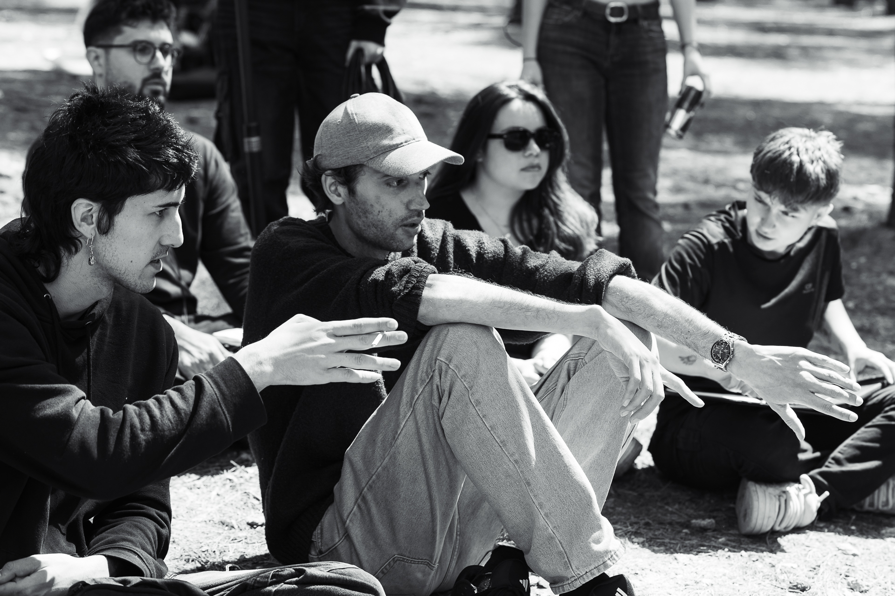
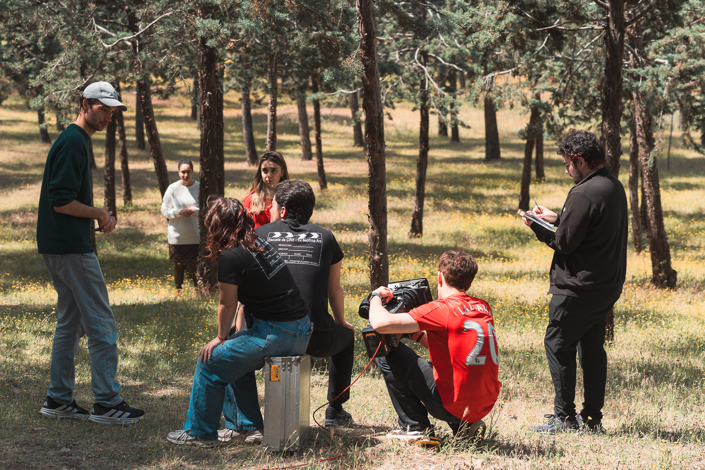
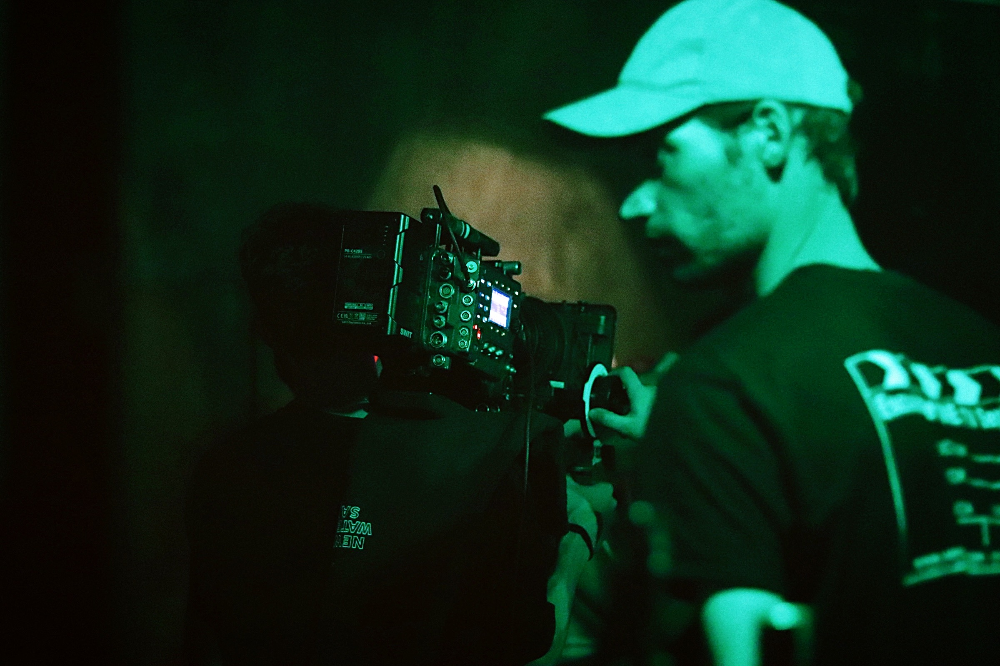
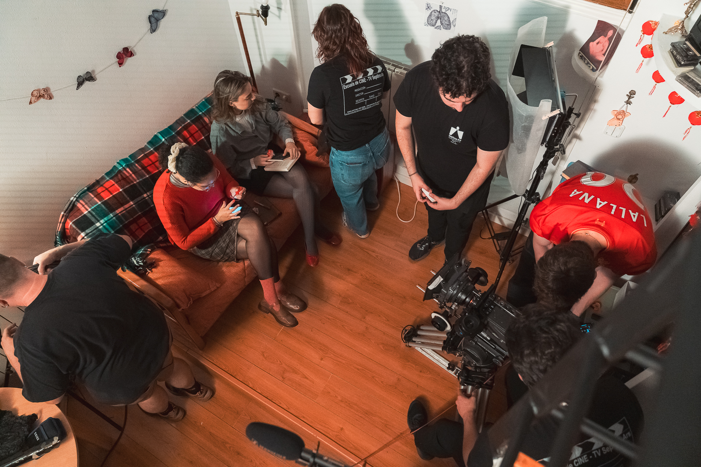
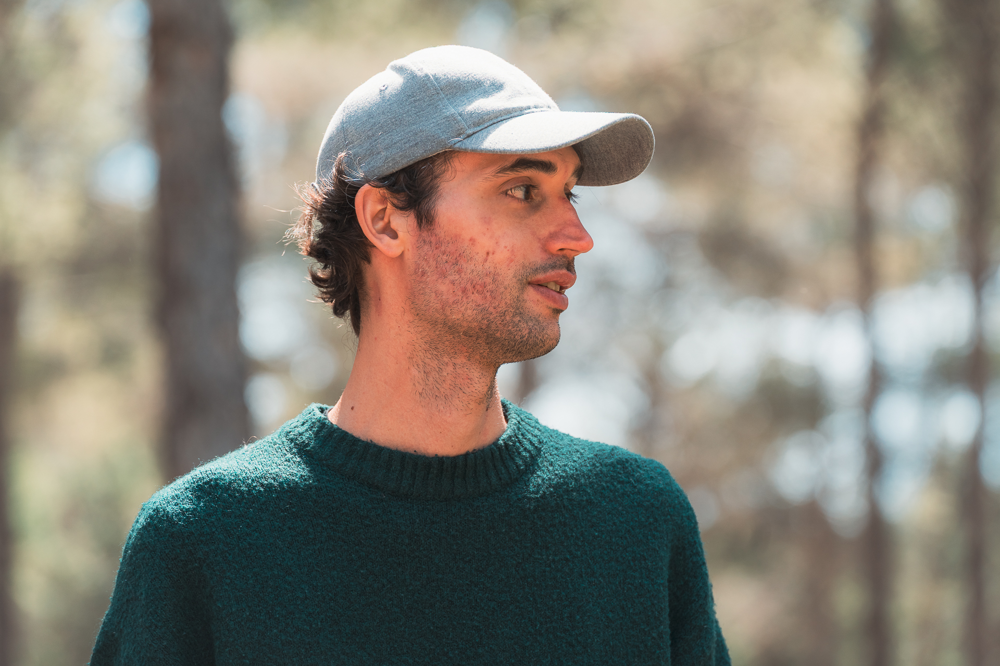

TAKE-01
Dirección
Editor de video con base documental y mirada cinematográfica. Corto, ritmo y narrativa para piezas verticales, marcas y documentales.

CH-01
CH-02
CH-03
CH-04Edición de documental, marca y contenido vertical. Pasa el cursor sobre cada toma para ver los detalles.
Cortometrajes propios. Fotogramas del set de cada producción.

TOMAS · MADRIDEl cine me tiene atrapado desde que recuerdo, y hoy tengo las herramientas necesarias para ponerlo en práctica. Completados mis estudios en dirección cinematográfica, siento el impulso para dejarme la piel en cada proyecto venidero con el objetivo de conectar, intercambiar ideas, generar contactos y seguirme formando en el tema que tanto me gusta: contar historias.
Actualmente resido en Madrid y estoy abierto a colaborar con creadores de contenido, agencias, compañeros de profesión, marcas y productoras. Tanto que busquen una edición con criterio narrativo y técnico, así como quienes busquen un acompañamiento en el proceso de montaje de sus proyectos.
Trayectoria académica y trabajo realizado: montaje, sonido y color en cortometrajes, documentales y piezas de marca.
Montaje, diseño de sonido y corrección de color en los siguientes cortometrajes y piezas:
Si buscas un editor con mentalidad de director, compartes mi amor por el documental, o tienes un proyecto en mente que quieras levantar...
¡Hablemos!